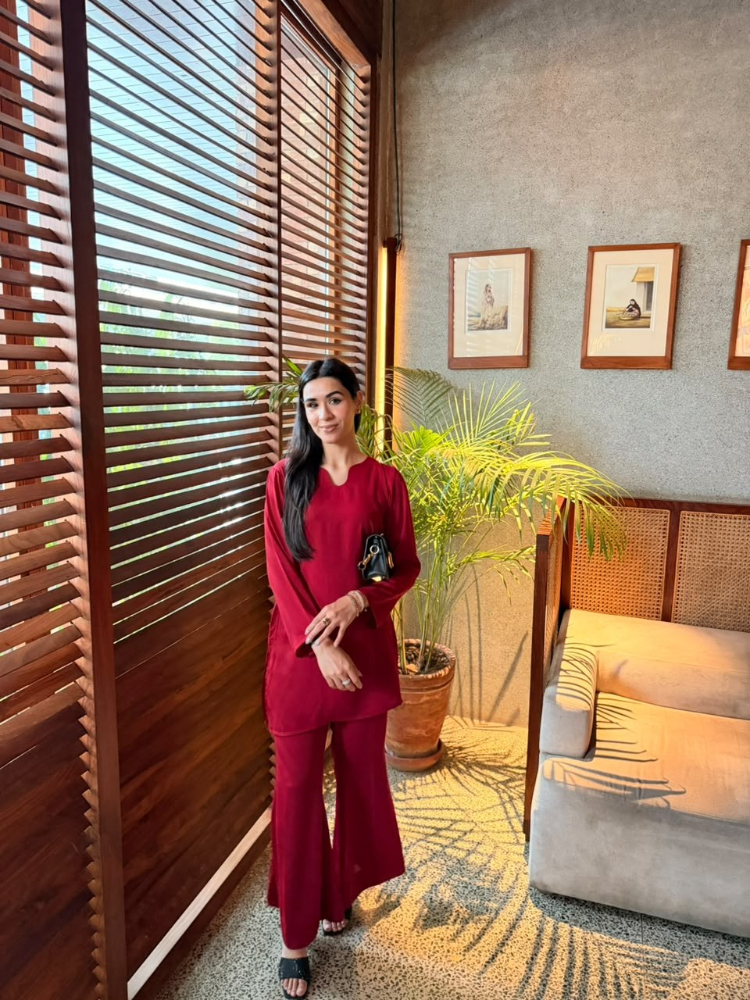
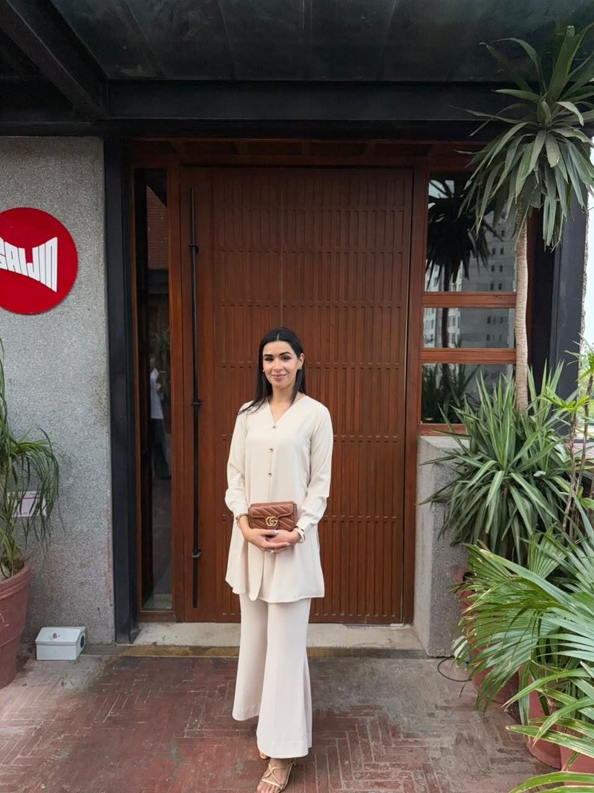
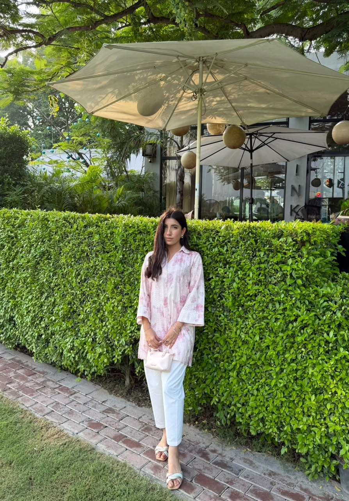

Concept 01The Residence
An intimate country-house editorial. Oversized type, warm ivory and an unhurried photographic rhythm.
Explore this conceptOne palette. Three perspectives. Explore each complete HTML concept, from the opening composition to the collection and product details.

Concept 01An intimate country-house editorial. Oversized type, warm ivory and an unhurried photographic rhythm.
Explore this concept
Concept 02A formal maison storefront. A blush masthead, a photographic triptych and a considered collection.
Explore this concept
Concept 03A collectible fashion journal. Numbered chapters, asymmetric compositions and room for every look.
Explore this concept